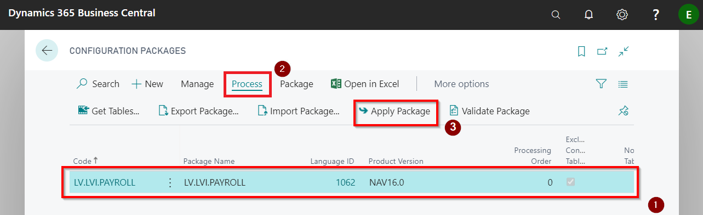

Disclaimer
Please note that data provided in the steps of user scenarios are sample data and differ from real life data of your company. This user scenario does not include setup, that is required by Latvian Payroll Base standard. Sample data that are displayed in brackets are intended to provide an indication, what information is expected to be completed at a certain step. In terms of real life scenarios, please ensure that your master data are configured in the way as it is recommended by the Setup of this App.
Walkthrough: Import Configuration Package
The basic settings and codes required for use of Latvian Payroll Base are created by applying the configuration package.
Click on the button Search for Page or Report..

Type Configuration Packages and select it from a list:

Import Configuration Package by pressing Import Package in the Ribbon
 -
-  and selecting the file from your file storage
and selecting the file from your file storage  .
.

Select LVI.LVI.PAYROLL package from list
and press Process and Apply Package .

Configuration package ensures the following information:
- Countries/Regions
- Payroll-related chart of accounts
- General ledger setup related to salaries
- General journal templates and batches
- Units of measures
- LV postal codes
- Bank account card for salary payments
- Bank posting group
- Number series and their lines
- SWIFT codes
- Causes for absence codes
- Employee statistics groups
- Employee posting groups
- References to articles of the Labor Law
- Human Resources setup
- Payroll setup
- Payroll components and setup
- Payroll bases and setup
- Social statuses and status codes
- Reduced interest rates for absence
- Calendars and calendar changes for current year.
- Posting setup for salary payments
- Posting setup for salary components
- PFPIS income and easing types
Walkthrough: Recruit employees and setup the company for the payroll
About this walkthrough: This walkthrough demonstrates the process for hiring the new employees.
Roles: These usage scenarios are prepared based on role center LV Payroll. However, no specific user role is mandatory, but we recommend to use role LV Payroll for the convenience of the user. To switch to the role LV Payroll, please, click on settings button , select My settings from the list and change the Role to LV Payroll .

Story: You are Elizabeth Brooks, a chief accountant of the sales company. Your responsibilities also include payroll. The company just started and your are the company's first employee with employment day 01.08.2020. It is also planned to recruit a sales manager James Smith with a starting date of 15.08.2020. Your task is to create employee cards, enter company's departments and positions and recruit the employees.
Pre-requisites: No specific prerequisites are required
Steps:
Click on Employees in the role center's navigation bar:

Press New in order to create a new employee card

In the General tab enter First name - Elizabeth. Enter Last name - Brooks. Select a Female from the gender list. And move to the next tab.

In the Address&Contact tab enter the Address - Liberty street 10-28. Enter Post code - LV-1001, and by entering this field, the fields City and Country will be filled in automatically. Move to the next tab.

In the Administration tab enter Employment Date - 01.08.2020. Check if the Status is Active, if fills in automatically by default. And move to the next tab.

In the Personal tab enter Birth Date - 04.02.1988. Enter Social security No.- 040288-11009 (first part of this number will be created automatically from the field Birth Date). Enter Previous Social Security No - 040288-11009. Check if Residence is Resident, if fills in automatically by default. Move to the next tab.

In the Payments tab select from the list Employee Posting Group - STR. Enter IBAN- LV77HABA0551002016716. Select from the list SWIFT Code - HABALV22. And move to the next tab.

In the Payroll tab select from the list Social Status Code - DN. And move back to the list of Employees to create a next employee card.

In the General tab enter First name - James. Enter Last name - Smith. Select a Male from the gender list. In the Address&Contact tab enter the Address - Oak street 25. Enter Post code - LV-1057. And move to the next tabs.

In the Administration tab enter Employment Date - 15.08.2020. Check if the Status is Active. In the Personal tab enter Birth Date - 24.06.1978. Enter Social security No.- 240678-12034. Enter Previous Social Security No - 240678-12034. Check if Residence is Resident. In the Payments tab select from the list Employee Posting Group - ADMIN. Enter IBAN- LV77HABA0551002016716. Select from the list SWIFT Code - HABALV22. In the Payroll tab select from the list Social Status Code - DN.

In order to assign to a employees the positions and payroll components, departments and position need to be registered. Let's start with departments. In the role center's navigation bar press Departments

Press New to create a list of departments.

Enter the following departments - 00-00, Administration and 01-00, Financial department and 02-00, Sales. Make sure that the Date Created for all department lines are 01.08.2020.

Let's create also the positions. In the role center's actions pane tap on Administration and choose Positions.

Press New to enter new position card.

Enter Description - Sales Manager. Choose from the list Profession Code - 2431 05. Choose from the list Department code - 02-00. Enter Total Loading -1,00. Enter the Date Created - 01.08.2020. Then go back to the list of positions to enter the next position card.

Enter Description - Chief Accountant. Choose from the list Profession Code - 1211 04. Choose from the list Department code - 01-00. Enter Total Loading -1,00. Enter the Date Created - 01.08.2020.

Go back to the list Employees and tap on the Elizabeth's employee card No to open the card.

In order to assign a position, press on the buttons Navigate
- Creating Add. Info and Create new employee position . A new Employee position card will open.

Enter Position Code - AM0002. Select Salary Type from the list - Aggregated Working Time. Enter Loading - 1,00. Choose 5DD calendar in field Calendar Code. And go back to employee card.

Now the tab Employee Position is filled with the new position.

Now go to James Smith employee card and press on the buttons Navigate - Creating Add. Info and Create new employee position to open Employee position card. Enter Position Code - AM0001. Select Salary Type from the list - 5 Day Work Week. Enter Loading - 1,00. Choose 5DD calendar in field Calendar Code.

And go back to employee card, where you will see the entered position.

Now let's assign the salary components to the employees. Open Elizabeth Brooks employee card and press on the buttons Navigate
- Creating Add. Info and Create Employee Payroll Components

Press Ok

Tap on the buttons Process and Employee Payroll Components. Employee Payroll Component List will opens.

Make the following adjustments: Code 101 change to 109
. Enter From Date - 01.08.2020 and enter the salary Amount - 1000,00 . Additionally enter the From Date - 01.08.2020 and Amount - 200,00 to component No 737 .

Go to James Smith employee card and assign the payroll components as well. Here Code 101 must remain, please enter only From Date - 01.08.2020 and Amount -1500,00. Enter the From Date - 15.08.2020 and Amount - 200,00 to component No 737.

Both employees also have been submitted Salary Book. This also should be registered in the each employee's card. Press the buttons Navigate - Additional Info For Payroll and Related Information

Enter for Elizabeth Brooks From Date - 01.08.2020
.

Enter for James Smith From Date - 15.08.2020.

Walkthrough: Payroll process for the first month
About this walkthrough: This walkthrough demonstrates how to register absences, grant bonuses and deductions to employees, and how to calculate and pay salaries at the end of the month.
Roles: use LV Payroll
Story: You are Elizabeth Brooks, a chief accountant of the sales company. Your responsibilities also include payroll. Your task is to register a sick leave, grant the bonuses and register a deduction due to received writ of execution. At the end of the month, perform payroll calculation, payout and posting.
Pre-requisites: In the Company Information setup must be entered data in the following fields:
- Name - Cronos,
- Country/Region Code - LV,
- Registration No. - 40004040004,
- VAT Registration No. LV40004040004
In Bank Accounts list, enter the data in the bank account card B010 what will be used for payroll:
- SWIFT code - HABALV22
- IBAN LV01HABA0001001012210 to the bank account card, what is used for payroll.
Steps:
Employee James Smith has submitted a sick list. To register it, click on Employee Absence in the role center's Actions bar

A new absence card will open. In the tab General select from the list Employee No - D0002. Select Cause of Absence Code - SLIMS_A. Enter From Date -20.08.2020, and enter To Date 26.08.2020. In the tab Payroll check that the calculation year is 2020 and month - August, the calculation date is included automatically by system according to last made salary calculation. And close the Absence card.

Both employees should be granted a bonus to the august salary. And for James Smith must be made a one-time deduction due to received writ of execution. In order to perform this, click on Component Register in the role center's navigation bar

A new Component register card will open. Enter a calculation period - Year 2020 and month August and type a Description - Bonus 08.2020 and deduction
. Press on the buttons Lines and Create Lines

Component generation tab will open. Select from the list Component Code - 107
. Enter the Amount - 200,00 . and click Ok .

Generated lines with bonuses will appear in tab Component Register ListPart.

Now it is time to add also deduction.In the next blank line select Employee No - D0002
. Choose from the list Payroll Component Code - 751 and enter Amount - 100,00 . The task is done, you can close the Component Register.

Now let's calculate the salaries. Click on Salary List in the role center's Actions bar

Payroll header will opens. Enter a calculation year 2020 and month August and type Description - Salary 08.2020
. Type Payment Information - Salary 08.2020 . Click the buttons Process and Insert New Lines 

Payroll Line generation window will pop out. Press OK.

Salary calculation lines will appear at the tab Lines. Fix the calculation by closing the Salary list, press the button Release Document

To prepare the payments, press Report and Export to Payment Journal

Payment journal generation window will appear. Choose from a list Gen.Journal Batch - PAYROLL
. Enter the Posting Date - 10.09.2020 . And click OK .

Click OK to confirm the generation process is done.

Payment Journal will open. Select both lines and press the buttons Bank and Export Payroll Payment

Click OK to confirm the file preparation process is done. The file now is saved in your downloads and is available for upload to bank systems.

Tap on the buttons Post/Print and Payroll Paym. Group. Posting to post the payment journal to General Ledger

Click OK to confirm the process of posting is done. Close the payment journal window.

To post also the salary list. Click on Process and Post Document

Confirm with OK to proceed with posting

Will pop out all the posting lines before saving. Press OK

Confirm with OK the posting process is done.

Walkthrough: Payroll process for the second month
About this walkthrough: This walkthrough demonstrates how to perform advance payments and prepayments, how to terminate the employee, and how to use Hour register.
Roles: use LV Payroll
Story: You are Elizabeth Brooks, a chief accountant of the sales company. Your responsibilities also include payroll. Your task is to pay salary advances, pay vacation pays before the vacation, get deal with final calculation till 25.09.2020. and payout to employee James Smith. And at the end of the month, perform payroll calculation, payout and posting.
Pre-requisites: In the Company Information setup must be entered data in the fields Name, Registration No., VAT Registration No. In Bank Accounts setup, enter the SWIFT code and IBAN to the bank account card, what is used for payroll.
Steps:
Both employees have applied for a salary advance payment. To prepare them, click on Advance List in the role center's Actions bar

Payroll header for advance payment will open. Type a Description - Salary advance payment 09.2020
, type a Payment Information - Salary advance payment 09.2020 . Click the buttons Process and Insert New Lines

Payroll line generation window will pop out. Click OK.

Lines with salary advances appears now in the tab Lines. To prepare the payments, press Report and Export to Payment Journal

Payment journal generation window will appear. Choose from a list Gen.Journal Batch - PAYROLL. Enter the Posting Date - 15.09.2020, and click OK.

Click OK to confirm the generation process is done

Payment Journal will opens. Select both lines
and press the buttons Bank and Export Payroll Payment . Click OK to confirm the file preparation process is done. The file now is saved in your downloads and is available for upload to bank systems.

Tap on the buttons Post/Print and Payroll Paym. Group. Posting to post the payment journal to General Ledger

Click OK to confirm the process of posting is done. By this an advances payout process is done because Advance lists do not need to be posted.

Employee Elizabeth Brooks has applied for vacation and wants to receive a vacation pay before the vacation begins. Let's start with the registration of the absence by clicking on Employee Absence

Employee absence card will opens. Select the Employee No - D0001. Choose the Cause of Absence code - ATVAL. Enter the From Date - 16.09.2020, and To Date - 18.09.2020. Close the Employee Absence card.

Now let's proceed with the vacation's pay. Click on Prepayment List in the role center's Actions bar

Payroll Header will opens. Type a Description - Vacation pay 09.2020.
. Type the Payments Information - Vacation pay 09.2020. . To specify the required absence, in the tab Filters select the Absence Code Filter - ATVAL . Enter the Absence Start Period Filter 16.08.20..30.09.20 . in order to generate the line, press the buttons Process  and Insert New Lines
and Insert New Lines  .
.

Payroll line generation window will pop out. Click OK.

Prepayment line will appear at the tab Lines. Fix the calculation by closing the Salary list, press the buttons Process and Release Document. The Status will change to Released.

To prepare a payment, press Report
and Export to Payment Journal . Payment journal generation window will appear. Choose from a list Gen.Journal Batch - PAYROLL . Enter the Posting Date - 15.09.2020 , and click OK .

Click OK to confirm the generation process is done

Payment Journal will opens. Select the line and press the buttons Bank
and Export Payroll Payment . Click OK to confirm the file preparation process is done. The file now is saved in your downloads and is available for upload to bank systems.

Tap on the buttons Post/Print
and Payroll Paym. Group. Posting to post the payment journal to General Ledger. Click OK to confirm the process of posting is done.

Have been received the information that employee James Smith wants to terminate the contract. The last working day is 25.09.2020. In order to perform a termination, open the list of Employees and tap on the required employee - D0002.

In the tab Administration, enter the Termination Date - 25.09.2020.

System will asks for confirmation. Press Yes.

After the confirmation of the termination, the system will automatically closes the position card with the same Termination date 25.09.2020, and...

... the same will be done with the Employee Payroll components

Now the final calculation can be prepared. Click on Salary List in the role center's Actions bar

Payroll header will opens. Type Description - Final Calculation 09.2020. Type Payment Information - Final Calculation 09.2020. Enter the Posting Date - 25.09.2020. Enter the Payout Date 25.09.2020.

Click the buttons Process
and Insert New Lines . Payroll Line generation window will pop out. Choose from the list employee No - D0002 and press OK .

Salary calculation lines will appear at the tab Lines. System will automatically include also the unused vacation days in the calculated Income amount.


Fix the calculation by closing the Salary list, press the buttons Process and Release Document. The Status will be changed to Released.

To prepare a payment, press Report
and Export to Payment Journal . Payment journal generation window will appear. Choose from a list Gen.Journal Batch - PAYROLL . Enter the Posting Date - 25.09.2020 , and click OK

Click OK to accept the generation process is done.

Payment Journal will opens. Select the line and press the buttons Bank
and Export Payroll Payment . Click OK to confirm the file preparation process is done. The file now is saved in your downloads and is available for upload to bank systems.

Tap on the buttons Post/Print
and Payroll Paym. Group. Posting to post the payment journal. Click OK to accept the process of posting is done.

In order to post a salary list, click on Process
and Post Document . Confirm with OK to proceed with posting.

Will pop out all the posting lines before saving. Press OK

Accept with OK the posting process is done.

To complete the process of termination, move back to the Employee card's tab Administration and change the Status from Active to Terminated

Employee Elizabeth Brooks have worked overtime in September. Extra hours can be registered in Hour Register. To reach Hour register, click on Hour Registers in the role center's Navigation bar

Press New, to create a new hour register's entry

A new line will opens for the entries in the Hour Register. Select Employee No. - D0001. Select the Year - 2020. Select the Month - September. Enter the Night Hours - 2,00. Enter the Overtime - 5,00. Close the Hour register.
The writ of execution was received for a deduction from Elizabeth Brooks. Tap on Component Register in the role center's Action bar

A new component register card will opens. Type a Description - Writ of Execution. In the tab Component Register ListPart select Employee No - D0001. Choose Payroll Component Code - 751. Enter the Amount - 50,00. And close the card.

All the Payroll data for September is entered and it can be proceeded with salary calculation. Click on Salary List in the role center's Action bar

Payroll header will opens. Type Description - Salary 09.2020
. Type Payment Information - Salary 09.2020 . In the tab Lines enter Employee No - D0001 . Click the buttons Process and Release Document , status of the Salary list will switch to Released.

To prepare the payments, press Report
and Export to Payment Journal . Payment journal generation window will appear. Choose from a list Gen.Journal Batch - PAYROLL . Enter the Posting Date - 30.09.2020 . And click OK .

Click OK to confirm the generation process is done.

Payment Journal will open. Select both lines and press the buttons Bank
and Export Payroll Payment . Click OK to confirm the file preparation process is done. The file now is saved in your downloads and is available for upload to bank systems.

Tap on the buttons Post/Print
and Payroll Paym. Group. Posting to post the payment journal to General Ledger. Click OK to confirm the process of posting is done.

To post also the salary list. Click on Process
and Post Document . Confirm with OK to proceed with posting.

49.Will pop out all the posting lines before saving. Press OK.